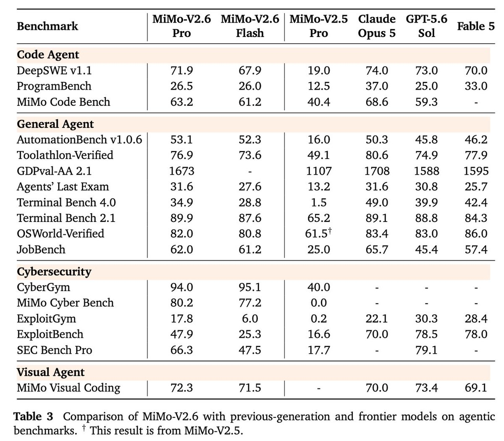
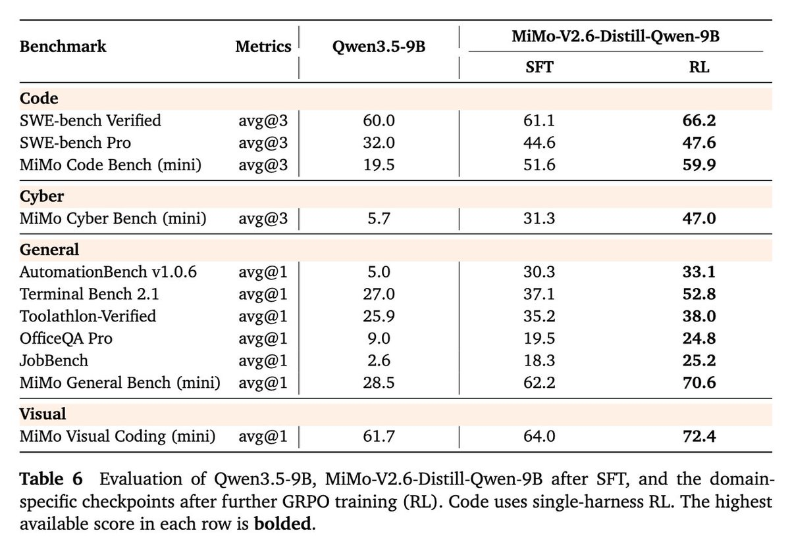
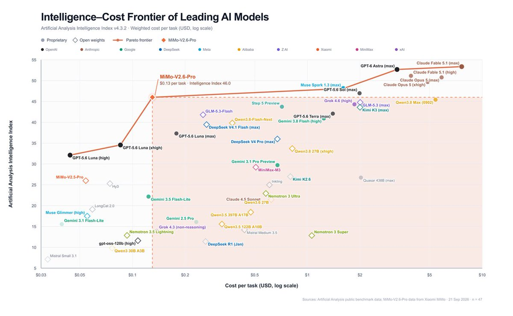
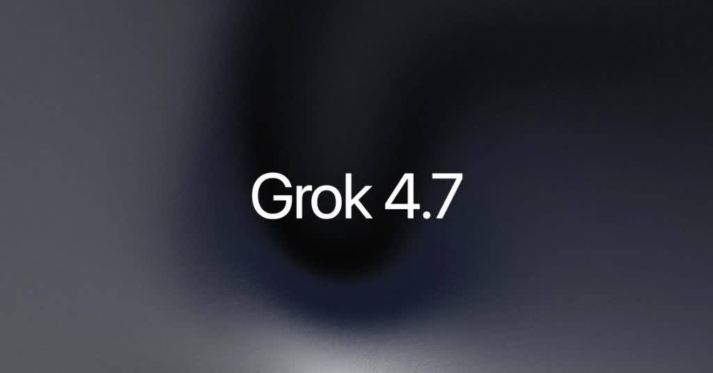
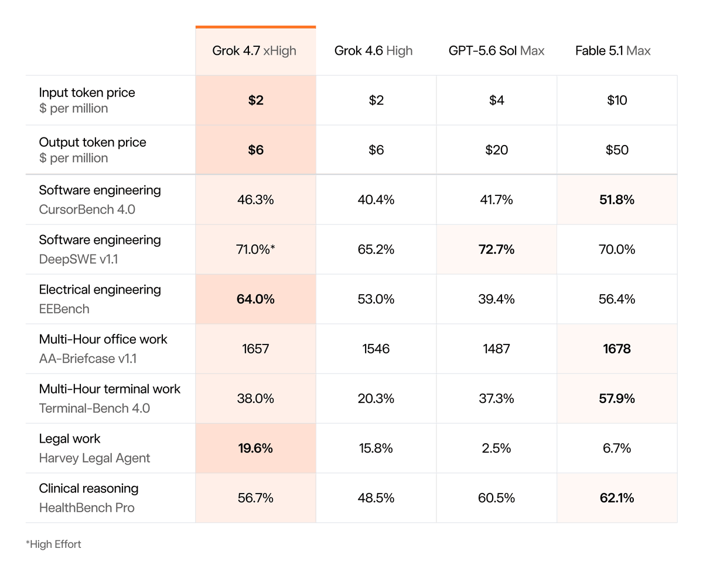
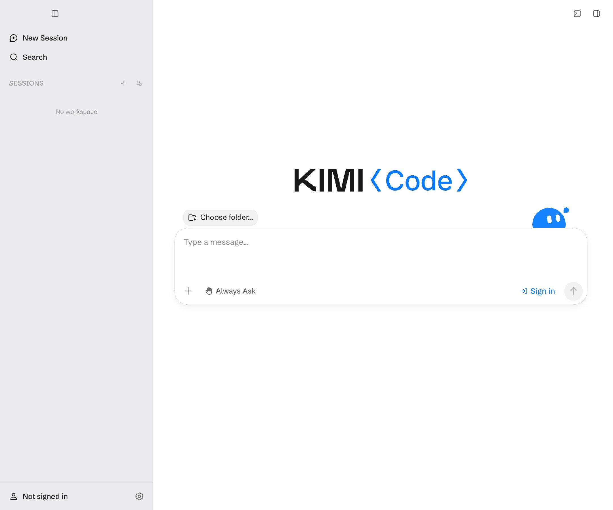
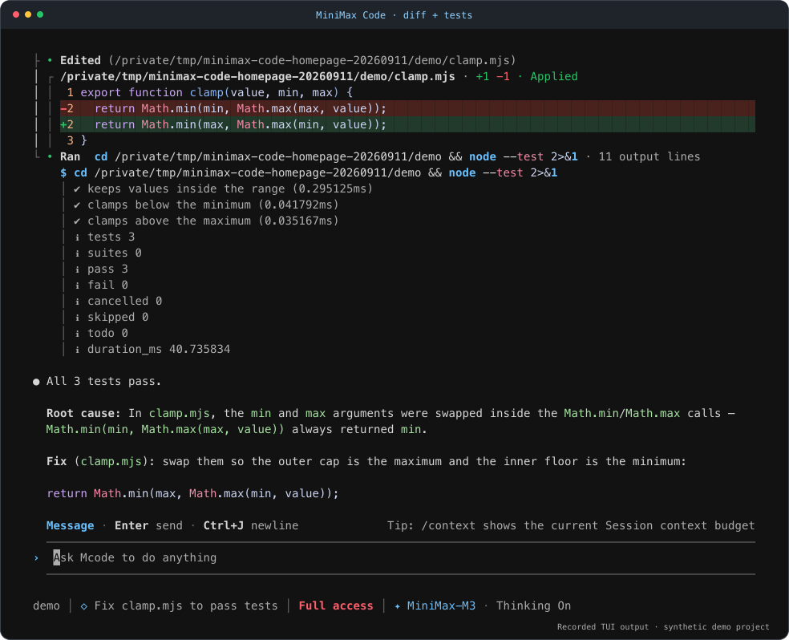

AI Intelligence Daily · 2026-09-22
0.5.1、ZCode 3.14.1 跟进。Cursor 仍 Sep10；Muse connectors 仍 404。
专栏一｜新闻
1. 小米 MiMo-V2.6：旗舰全模态开源 + Desktop/会员同发
事实
官方 X 宣布 MiMo-V2.6 Pro & Flash：全模态、scaled RL；文称 Pro 可比 Claude Opus 5 / GPT-5.6 Sol，AA Index 约 46（开源最高档口径）。同串开源 Pro/Flash 权重、Distill-Qwen-9B、技术报告、7K+ RL 环境与 mini-harnesses。HF 集合可核验；架构约 1.02T/42B MoE、1M 上下文。Desktop「Now Live」与会员同发；UltraSpeed 宣称最高约 20×；API 定价相对 V2.5 不变。互动约 3708 likes / ~249k impressions；HN ~473 points。
判断
国内一线把旗舰开源、RL/harness 资产与 Desktop 商业化绑在同一日——对 Agent 引擎与能力供给双线撞击。



官方 X · 官网 · HF 集合 · Model Release
2. xAI Grok 4.7：Cursor / API / Coding Harness 当日可用
事实
官方新闻稿：coding/knowledge work 旗舰；同价同速档相对 4.6（$2/$6）；fast variant 约 2× 速/价。明确 available today 于 Cursor、Grok Build、Grok API、第三方 coding harness 与 routers/cloud。@SpaceXAI 补发「Grok 4.7 is here」（约 2.4 万 likes / ~900 万 impressions）；HN ~480 points。
判断
coding-first 旗舰以「进 Cursor/harness 当日可用」为发布定义——立即改写模型对照表。


3. Kimi Code Desktop 正式可用（漏扫补发）
事实
官方文档：图形客户端承载 CLI Agent 核心；mac/Win；Goal/Plan/Swarm、权限三态、Changes、内置终端与浏览器（1.0.2 大改）。无会员则官方模型不可直用，可 BYOK。此前因未钉 Desktop changelog 漏收，今日补专栏。
判断
Work/Desktop Agent 标准骨架样本——与引擎主线高度同构。

4. MiniMax Code：跟进至 v0.5.1
事实
GH Release v0.5.1 + npm @minimax-ai/code@0.5.1；★约 1693。属发布工程小版本，非 Desktop 开源。
判断
pin/复现通道继续硬化。

5. 智谱 ZCode 3.14.1：电脑控制启动修复
事实
官方 changelog 3.14.1：修复 Computer Control 可能无法启动；开源/审计仍未见。
判断
信任事故后的小版本修补节奏；闭环仍 outstanding。
专栏二｜话题热议
1. MiMo-V2.6 与 Grok 4.7 双热
MiMo Introducing ~249k impressions / HN ~473；Grok @SpaceXAI ~900 万 impressions / HN ~480。与官方 shipping 同日，非纯情绪噪音。
2. Step 5 Preview 社区体感（近失）
窗内多为试用体感与官方 thank-you，无新 shipping；继续盯 10/15 开源。
专栏三｜开源雷达
1. XiaomiMiMo MiMo-V2.6（HF + RL/Harness）
集合 mimo-v26：Pro-RL / Flash-RL / Distill；宣称 7K+ RL 环境与 mini-harnesses。建议拆源码 / 读报告 / PoC。
2. MiniMax Code v0.5.1 · BrowserSkill / cua 热度延续
MiniMax ★≈1693；BrowserSkill ★≈6338（仍 cli-v0.3.0）；cua ★≈25689——无新于已报的正式产品 Release。
趋势与吸收
- 开源开始附带 harness/RL 资产包（MiMo）。
- Coding 旗舰以「进 Cursor/harness 当日可用」为发布定义（Grok 4.7）。
- 国内 Desktop Agent 产品面密集补齐（Kimi + MiMo Desktop）。
- 信任修复进入小版本节奏（ZCode 3.14.1）；开源审计仍未闭环。
智能体互联网：harness/RL 环境作为一等公民；Desktop 浏览器+审批卡的委托边界。
Work/Agent 引擎：多 harness 混训；发布即进 Cursor；Goal/Plan/Swarm+权限三态。
价格 / 订阅雷达
- MiMo-V2.6：相对 V2.5 同价口径；Claw 限时 ¥14.9/月（以官网为准）。
- Grok 4.7：$2/$6；fast 约 2×；Vercel Gateway 至 9/27 四折。
- Qoder Sonus：9/21–9/25 每日 4000 Credits；Flash 限免至 9/30。
值得继续跟踪
- MiMo-V2.6 权重/harness/Desktop
- Grok 4.7 Cursor/API A/B
- Kimi Code Desktop 实机
- ZCode 开源与审计
- Qoder Sonus→09-25 · Flash→09-30
- Step 5 → 10/15 开源
- ax / Muse 404 / Cursor Sep10 / MiniMax Desktop / 小艺 0.7.0